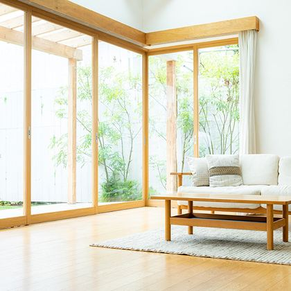
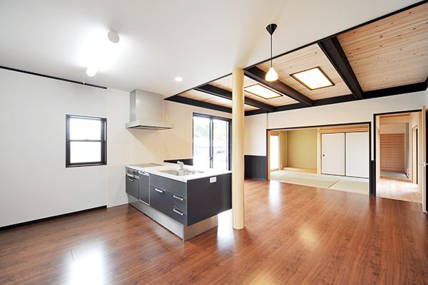

5者が連携して取り組んでいます
活動エリア 川崎市多摩区・多摩市
学び・啓発
教育啓発ワークショップや出張セミナーを通じて、住まいの終活と住み継ぎの知識を地域に広げます。
相談・予防
空き家になる前の早い段階から相談を受け付け、住まいの将来を家族と一緒に考える場をつくります。

再生・流通
インスペクションやリフォームの専門家と連携し、既存住宅を安心して次の世代へつなぎます。
官民連携・モデル事業
行政・不動産・金融機関が協働し、地域の空き家対策を制度・モデル事業として形にしていきます。

2026年度 空き家対策モデル事業
小田急沿線既存住宅流通促進協議会の提案が
小田急沿線既存住宅流通促進協議会の提案が
国土交通省「令和8年度空き家対策モデル事業」に採択されました！
小田急沿線既存住宅流通促進協議会の提案が、国土交通省が所管する「令和8年度空き家対策モデル事業」において、2026年7月8日付で事業採択されました。神奈川県川崎市麻生区および多摩区において、「学びで掘り起こし、相談でつなぎ、再生で未来へ渡す空き家対策モデル」として、住まいに関する学びや相談機会の提供により、空き家予備軍や潜在的な地域課題を掘り起こします。そしてその後の空き家再生・流通につなげる取り組みを、官民金(行政・民間企業・金融機関)が連携して推進していきます。
詳しくはこちら2017年
協議会設立
2018年
相談窓口スタート
2020年
あんしんストック認定開始
2021年
空き家実態調査
2024年
教育啓発ワークショップ開始
2026年
継続セミナー開催
2026年
空き家対策モデル事業 採択
親の住まいを、次の世代の暮らしへ
親から受け継いだ住まいを、インスペクションとリフォームを経て次の家族へつなげた最初の認定事例です。
所在地
川崎市多摩区
構造
木造2階建て
取組内容
インスペクション
取組内容
水回りリフォーム
空き家だった実家を、賃貸住宅として再生
相続後に空き家となっていた実家を、断熱リフォームと外壁塗装によって賃貸住宅として住み継いだ事例です。
所在地
川崎市多摩区
構造
木造平屋建て
取組内容
断熱リフォーム
取組内容
外壁塗装
二世帯住宅を、将来に備えてリノベーション
耐震診断をきっかけに、二世帯での暮らしを見据えた内装リフォームを行い、長く住み継げる住まいにした事例です。
所在地
多摩市
構造
鉄骨造3階建て
取組内容
耐震診断
取組内容
内装リフォーム
相続前の相談から、スムーズな住み継ぎへ
所有者がご存命のうちから将来の相続を見据えて相談いただき、住宅診断を経てスムーズな売却につなげた事例です。
所在地
多摩市
構造
木造2階建て
取組内容
相続前診断
取組内容
売却仲介